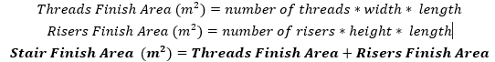
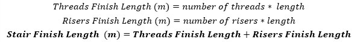

Utilize the dimensions of the stairs to calculate the finish area. Depending on the finish type, the quantification unit should be either length (m or ft) or square area (m² or ft²).
Area = (Tread Depth + Riser Height) × Stair Width × Number of Steps
Length = (Tread Depth + Riser Height) × Number of Steps
